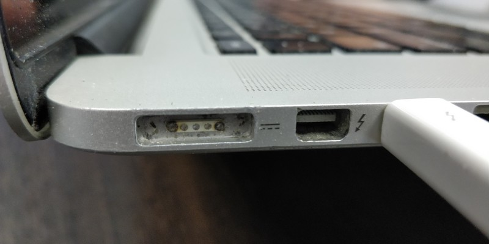

Про очередное подгорание и чёрную магию яблочной компании
Другие части эпопеи можно найти тут.

 Думаете, у меня подгорает нижняя чакра? Не угадали. Подгорает, но у макбука. Порт зарядки. MagSafe2. Контакты обуглились. Слово Safe в названии как бы намекает, что обугливающиеся контакты и разъём, нагревающийся до 80+ градусов цельсия при зарядке - это безопасно. Наверное контакты обугливаются безопаснее в 2 раза по сравнению с предыдущим MagSafe. К слову, переходник с MagSafe на MagSafe2 стоит около тысячи рублей (не напрягаясь можно найти за полторы). Кусочек алюминия с четырьмя медными контактами и магнитиком. Адаптер этот весит примерно около 20-25 грамм. Вес одного грамма серербра сегодня составляет около 110 рублей за грамм. Одним словом, под видом адаптеров питания продаётся алюминий и медь по цене в половину цены серебра. Отличный способ экстремально дорого продавать самый распространённый на земле металл! Мне кажется, я в своей жизни занимаюсь чем-то не тем. Разъём для макбука с заменой (кусочек текстолита, четыре медных контакта, кусок металла, немного проводов и пластиковый коннектор - это три с половиной тысячи рублей. Три года ноутбуку, а в него уже вложено 1500 за профилактику + 7500 замена батареи + 3500 за разъём. Итого 12 тысяч рублей. Ноутбук, на котором я работаю дома последние полтора года, стоил мне чуть больше 12 тысяч рублей.
Думаете, у меня подгорает нижняя чакра? Не угадали. Подгорает, но у макбука. Порт зарядки. MagSafe2. Контакты обуглились. Слово Safe в названии как бы намекает, что обугливающиеся контакты и разъём, нагревающийся до 80+ градусов цельсия при зарядке - это безопасно. Наверное контакты обугливаются безопаснее в 2 раза по сравнению с предыдущим MagSafe. К слову, переходник с MagSafe на MagSafe2 стоит около тысячи рублей (не напрягаясь можно найти за полторы). Кусочек алюминия с четырьмя медными контактами и магнитиком. Адаптер этот весит примерно около 20-25 грамм. Вес одного грамма серербра сегодня составляет около 110 рублей за грамм. Одним словом, под видом адаптеров питания продаётся алюминий и медь по цене в половину цены серебра. Отличный способ экстремально дорого продавать самый распространённый на земле металл! Мне кажется, я в своей жизни занимаюсь чем-то не тем. Разъём для макбука с заменой (кусочек текстолита, четыре медных контакта, кусок металла, немного проводов и пластиковый коннектор - это три с половиной тысячи рублей. Три года ноутбуку, а в него уже вложено 1500 за профилактику + 7500 замена батареи + 3500 за разъём. Итого 12 тысяч рублей. Ноутбук, на котором я работаю дома последние полтора года, стоил мне чуть больше 12 тысяч рублей.
Ещё сегодня сослуживец опрокинул стакан воды на макбук про. Тоже модель 15.6'', середины 2015-го года. Снять крышку не удалось по причине того, что винты, её удерживающие имеют шлиц типа звёздочка (не стандартный торкс, а именно звезда с пятью лучами), который срывается отвёрткой намного проще, нежели винт с крестовым шлицом и на этом ноутбуке уже пара винтов были сорваны, то есть, разобрать его самостоятельно не представляется возможным. Я снял несколько клавиш, обнаружил под ними воду между плёнками. Очевидно, это чудо инженерной промышленности нужно было телепортировать в сервис центр, где его разберут и просушат, в противном случае потом можно получить проблемы с клавиатурой (или ещё что-нибудь посерьёзнее), а замена будет стоить порядочных денег. Одним словом, нужно было быстро мигрировать сослуживца на другой ноутбук. Взял резервный (прошка 13.3 2011-го года), подключил через thunderbolt (специальный кабель за 2500 рублей) - мак долго и мучительно собирал данные о том, что же там такое лежит, потом началась миграция. Миграция обещала закончиться через 2 с половиной часа примерно для 350гб данных и шла со скоростью около 30-40мб/с. И на той и на другой машине быстрые SSD. Для сравнения на обычный не самый быстрый hdd в usb боксе запись блоками в 20мб идёт в среднем со скоростью 60 - 90 мб/с. Ладно, ждём. Через какое-то время я обнаружил, что прогрессбар не двигается. Застыл на "осталось 1 час 26 минут" и оставался в таком состоянии в течение часа. Активна только кнопка отмены. Ок. Отменяем, запускаем процесс по новой. Мак заявляет, что миграция не может быть запущена, так как текущий мак имеет слишком старую версию. Только что было возможно и перестало. Видимо, в процессе миграции мак резко состарился и сдаунгрейдился.
Ещё один интересный момент. Я ставлю в макбук новый пустой SSD, загружаюсь в режиме восстановления (это достаточно небыстрый процесс, с указанием нужной точки доступа, пароля и подтягиванием чего-то из сети). Я выбираю переустановку операционной системы, открывается визард, в котором мне предлагают выбрать устройство, на которое нужно эту систему накатить.
Окно пустое, доступна только одна кнопка "Restart" и вернуться к другим утилитам я не могу. В меню доступны Restart, Shut Down и меню "StartupDisk", которое оказывается пустым, при нажатии на него ничего не происходит.
Казалось бы логичным предложить пользователю создать нужный раздел или разделы автоматически при установке, но лучше пусть перезагрузится и начнёт всё сначала. Это очень user friendly!
Ладно, с этим разобрались. Перезагружаемся, пьём чай, пока мак подтянет всё что нужно из сети, сначала при помощи дисковой утилиты создаём разделы, потом переустанавливаем операционку. Установился Lion 10.7.5, заняло это около часа. Я попробовал подключить залитый водой бук в качестве внешнего жёсткого диска к тому, на котором только что всё переустановил. Внешний мак был воспринят как диск с неизвестной файловой системой и поступило предложение этот диск отформатировать, чтобы можно было его использовать далее. А ведь какая-нибудь домохозяйка может и согласиться в этот момент - сама макось же предлагает, что может пойти не так? К чему это приведёт - не проверял, но подозреваю, что к полной утере всего, что не было синхронизировано в облако. Гениально. Пытаюсь обновить мак с Lion'ом - написано, что обновлений для него нет. Пытаюсь поставить Mojave - получаю сообщение, что это возможно только при наличии на борту MacOS не старше 10.8. А апдейтов нет. И в эппл сторе они ни по macos ни по 10.8 не находятся. Ок. В общем, сослуживец пошёл ставить софт по-новой и вытаскивать данные из облака, а я - ставить на второй резервный ноутбук что-то посвежее льва. Ищу High Sierra - в эппл сторе не отображается (зато на некоторые версии MacOS продаётся куча мануалов вида "Basics of OS X Maverik" стоимостью около тысячи рублей - а почему бы и нет?). Нахожу на support.apple.com мануал, в нём ссылку на High Sierra, ссылка перебрасывает меня в AppStore. Пытаюсь поставить, получаю сообщение - мол, оплата не прошла. Здравствуйте! Какая оплата? Ладно, вбиваю свой AppleID, к которому не привязано ни одной карты, пробую повторить процесс, получаю в ответ, что для апгрейда мне нужна версия не ниже чем 10.8. Нашёл другую ссылку и по ней, о чудо - началась загрузка из аппстора. Поделился радостью с сослуживцем, на что он мне ответил - "так что, ты тут до завтрашнего дня?".
В итоге процесс загрузки занял примерно два с половиной часа. После перезагрузки сьерра написала, что осталась одна минута. Через 5 минут написала, что осталось меньше минуты. Надпись "осталось 38 секунд" висела ещё минуты три. В итоге минута длилась примерно полчаса. После этого мак отправился в ребут, показал мне новый прогрессбар и радостно сообщил, что осталось ещё примерно полчаса. Да неужели? Радость-то какая! Примерно на этом моменте я в десятый раз пожалел о том, что решил обновить мак "как положено для домохозяек", а не через создание отдельной загрузочной USB флешки. И я бы ещё понял, если бы это происходило на ноутбуке с гигабайтом оперативки, древним селероном и медленным жёстким диском, но это Core i5 c 16Гб оперативной памяти, быстрым SSD (естественно, подключенным не в оптибее, а на штатном месте) и стомегабитным аплинком. Напомню, что установка линукс минт с древней 4-х гиабайтной USB 2.0 флешки на неттоп с селероном n5000, с SSD, который был примерно в 4 раза медленнее и с ресайзом раздела винды у меня заняла около 17 минут.
Спустя примерно три с половиной часа после начала обновления на High Sierra, оно успешно завершилось. Далее следовала установка Mojave. На этот раз загрузка пообещала завешиться через 8 минут. Об этом меня уведомила тёмно-серая надпись на тёмно-синем фоне - гениальное дизайнерское решение. Разобрать хоть что-то с расстояния 40 см уже нереально.

Некоторое время количество оставшихся минут увеличивалось, пока не достигло 28ми, затем начало рывками уменьшаться. Загрузка завершилась примерно за 15 минут и на том спасибо. После этого пошёл процесс установки. Mojave попросила на это 1 час и 37 минут.
По истечении этого времени перезагрузилась и снова прогрессбар ещё примерно на час.
Итого, обновление с Lion до Mojave заняло каких-то шесть с небольшим часов времени, плюс час на установку самого Lion. Итого: более семи часов.
Мне интересно, а что делать в момент факапов тем, кому нужно просто работать? Либо нужно иметь на полке пару запасных маков (сейчас самый дешёвый мак образца прошлого года стоит около ста тысяч рублей, топовый - более полумиллиона). Либо пару usb жёстких дисков с уже установленной макосью, нестандартную отвёртку с шлицем пятиконечной звёздочкой, заодно пару шлейфов, которые неизбежно умрут, не самую дешёвую батарею, специальный фен (батареи сейчас посажены на термоклей внутри корпуса), бубен и огнетушитель для задницы (точно пригодится). Либо возможен третий вариант - иметь всегда в запасе несколько десятков тысяч рублей на поход в сервис центр.
Я вообще не понимаю, как люди живут на маках? При размере конторы примерно в 20 человек, макбуки трёх - шестилетней давности постоянно курсируют между работой и сервис-центром. Это и есть та самая "магия apple"? Какая-то чёрная магия получается. Вжух! И сломался шлейф в закрытом алюминиевом юнибади корпусе. Вжух! И погас монитор, купленный за 60 тысяч рублей. Вжух! И батарея вспухла, выгнув алюминиевую крышку, прикрученную винтами (которые вы даже открутить не сможете) и выдавив тачпад над верхней панелью.
Вчера я унёс в профилактику один ноутбук, чтобы его разобрали и высушили, а сегодня скорее всего пойду забирать его обратно, заодно отнесу им ещё три макбука. Один - с подгорающими контактами и два в профилактику, ибо тормозят и греются так, что работать некомфортно.
Такое ощущение, будто нашу контору по неведомым причинам проклял сам Тим Кук, а у остальных все прекрасно, вокруг сплошные пони и бабочки. Лично знаю (и не понимаю) несколько людей, которые поработав на маках на работе, уже не рассматривают для приобретения в личное пользование ничего кроме макбука. Складывается такое впечатление, что это какое-то заболевание, что-то вроде токсоплазмоза, только заставляющего любить продукцию Apple, и у меня к нему иммунитет.
Теги: mac